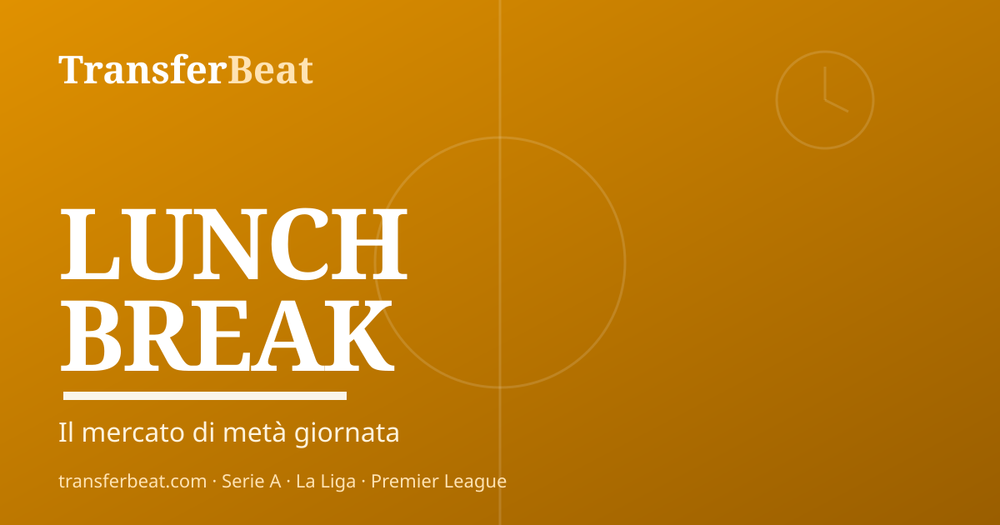

Dumfries al Real, Hojlund al Nápoles: el mercado de junio despega
El Inter confirma en silencio el traspaso de Dumfries al Real Madrid mientras el Nápoles ya tiene a su delantero para el Mundial: Rasmus Hojlund llega desde el Manchester United. Dos movimientos que reconfiguran el mercado de la Serie A en este martes por la mañana.
El Inter arranca el día con una serie de salidas confirmadas. Sebastiano Esposito se ha marchado al Cagliari y esta mañana llegó la noticia más esperada: Henrikh Mkhitaryan abandonará el club como agente libre. En el capítulo de llegadas, Guglielmo Vicario (Tottenham) está a punto de cerrar como portero titular. El expediente más candente sigue siendo el de los hermanos Palestra: Sky Sport informa de que el Inter y el Atalanta negocian por Giorgio y Tommaso, después de que Marotta reconociera públicamente que 'nos gusta' (Gazzetta dello Sport). Davide Frattesi se acerca a la Roma en un intercambio que podría llevar al defensa Gianluca Mancini a Milán.
El Nápoles de Allegri construye con rapidez y ambición. Rasmus Hojlund ya es jugador napolitano: el delantero danés llega del Manchester United como estandarte del nuevo ciclo. Miguel Gutiérrez (Girona) fue el primer fichaje como lateral izquierdo, y João Gomes del Wolverhampton está confirmado para el centro del campo (Sky Sport). Esta mañana han surgido nuevos nombres: Lang y Lucca como alternativas en ataque, y Rios del Benfica como posible refuerzo para el mediocampo.
La Juventus tiene tres operaciones que apuntan en direcciones distintas. Douglas Luiz regresa del Aston Villa tras un préstamo decepcionante — Spalletti deberá decidir su futuro inmediato. Alexander Sorloth está a punto de cerrar su llegada desde el Atlético de Madrid: el delantero noruego ya tiene acuerdo personal y solo falta el entendimiento entre clubes. Por el lado de las salidas, Dusan Vlahovic parece camino del Barça, mientras circulan rumores sobre la marcha de Adrien Rabiot y un posible regreso estelar de Bremer.
El AC Milan ha decidido recomenzar desde cero y avanza a buen ritmo. En apenas una semana han salido Noah Okafor (Leeds United), Yunus Musah (Atalanta), Samuel Chukwueze (Fulham), Alex Jiménez (Bournemouth) y Lorenzo Colombo (Genoa). Cinco salidas en siete días. La búsqueda de sustitutos está en marcha: Carlos Summerville del West Ham y Emerson Royal del Tottenham son los nombres más vigilados.
El mercado internacional cierra con tres operaciones cerradas. Lucas Beltrán deja la Fiorentina y se va al Valencia. Matías Vecino pone fin a su historia italiana fichando por el Celta de Vigo. Desde el Bernabéu llega la confirmación de la salida de Antonio Rüdiger, mientras el Real Madrid asimila la llegada de Dumfries y evalúa más objetivos.
TransferBeat agrega noticias de mercado citando las fuentes originales. Noticia en desarrollo.